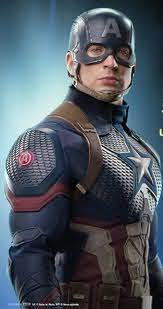
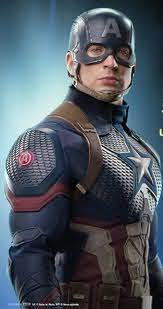
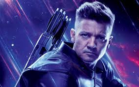
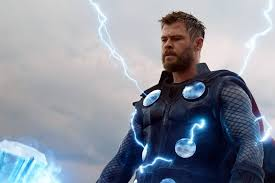
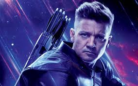
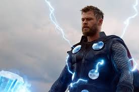
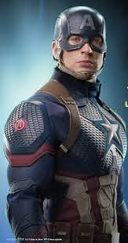
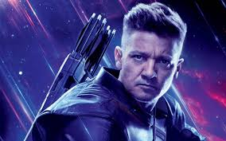
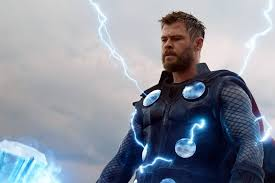

PHOTO GALLERY
 

 




"Marvel Films" redirects here. For other uses, see List of films based on Marvel Comics publications. Marvel Studios, LLC Marvel Studios 2016 logo.svg Formerly Marvel Films (1993–1996) Type Subsidiary Industry Film, Television Genre Superhero fiction Founded December 7, 1993; 26 years ago src="avengers-logo-font-download.jpg"> Founders id=" " Avi Arad ToyBiz Marvel Entertainment Headquarters Frank G. Wells Building 2nd Floor 500 South Buena Vista Street, Burbank, California, United States Area served Worldwide Key people Kevin Feige (President, CCO) Louis D'Esposito (Co-president) Victoria Alonso (head of production) Products Motion pictures Television shows music Parent The Walt Disney Studios (2009-present) Divisions Marvel Television Subsidiaries Marvel Animation Marvel Music Marvel Film Productions LLC MVL Development LLC MVL Productions LLC Website marvel.com/movies Footnotes / references [1][2][3] Marvel Studios, LLC[4] (originally known as Marvel Films from 1993 to 1996) is an American film and television studio that is a subsidiary of The Walt Disney Studios. Marvel Studios is known for the production of the Marvel Cinematic Universe films, based on characters that appear in Marvel Comics publications.Marvel Studios has released 23 films since 2008 within the Marvel Cinematic Universe, from Iron Man (2008) to Spider-Man: Far From Home (2019). These films all share continuity with each other, along with the One-Shots produced by the studio and the television shows produced by Marvel Television. In addition to the Marvel Cinematic Universe, Marvel Studios was also involved with the production of other Marvel-character film franchises that have exceeded $1 billion in North American box office revenue: the X-Men and Spider-Man multi-film franchises. Marvel Studios is also developing television series which will air on Disney+, and will oversee production for remaining Marvel Television series following its folding into Marvel Studios.Marvel Films The logo used under the Marvel Films branding. Following Marvel Entertainment Group's (MEG) ToyBiz deal in 1993, Avi Arad of ToyBiz was named President and CEO of Marvel Films division and of New World Family Filmworks, Inc., a New World Entertainment subsidiary. New World was MEG's former parent corporation and later a fellow subsidiary of the Andrews Group.[10][11] Marvel Productions became New World Animation by 1993 as Marvel would start up Marvel Films including Marvel Films Animation.[10][12][13] Marvel Films Animation shared Tom Tataranowicz with New World Animation as head of development and production.[14] New World Animation (The Incredible Hulk), Saban (X-Men) and Marvel Films Animation (Spider-Man) each produced a Marvel series for television for the 1996–1997 season.[15] It was Marvel Films Animation's only production.[13][16] By the end of 1993, Arad and 20th Century Fox struck a deal to make a film based on the X-Men.[17] New World Animation and Marvel Films Animation were sold along with the rest of New World by Andrews Group to News Corporation/Fox as announced in August 1996. As part of the deal, Marvel licensed the rights to Captain America, Daredevil and Silver Surfer to be on Fox Kids Network and produced by Saban. New World Animation continued producing a second season of The Incredible Hulk for UPN.[15][18] Marvel Studios In August 1996, Marvel created Marvel Studios, an incorporation of Marvel Films, due to the sale of New World Communications Group, Inc., Marvel's fellow Andrews Group subsidiary in film and television stations, to News Corporation/Fox. Filing with the U.S. Securities and Exchange Commission to raise money to finance the new corporation, Marvel, Isaac Perlmutter's Zib, Inc. and Avi Arad sold Toy Biz stocks, which Marvel had started and took public in February 1995.[7][19] Toy Biz filed an offering of 7.5 million shares with a closing price of $20.125 at the time, making the offering worth approximately $150 million. Toy Biz sought to sell 1 million shares, and Marvel sought to sell 2.5 million shares.[20] Jerry Calabrese, the president of Marvel Entertainment Group and Avi Arad, head of Marvel Films and a director of Toy Biz, were assigned tandem control of Marvel Studios. Under Calabrese and Arad, Marvel sought to control pre-production by commissioning scripts, hiring directors, and casting characters, providing the package to a major studio partner for filming and distribution. Arad said of the goal for control, "When you get into business with a big studio, they are developing a hundred or 500 projects; you get totally lost. That isn't working for us. We're just not going to do it anymore. Period."[7] Marvel Studios arranged a seven-year development deal with 20th Century Fox to cover markets in the United States and internationally.[21] In the following December, Marvel Entertainment Group went through a reorganization plan, including Marvel Studios as part of its strategic investment.[22] By 1997, Marvel Studios was actively pursuing various film productions based on Marvel characters, including the eventual films X-Men (2000), Daredevil (2003), Elektra (2005) and Fantastic Four (2005). Unproduced projects included Prince Namor, based on the character Namor and to be directed by Philip Kaufman, and Mort the Dead Teenager, based on the comic book of the same name and written by John Payson and Mort creator Larry Hama.[23] Marvel was developing a Captain America animated series with Saban Entertainment for Fox Kids Network to premiere in fall 1998. However, due to the bankruptcy the series was canceled after only character designs and a one-minute promotional reel were made.[24][25][26]


